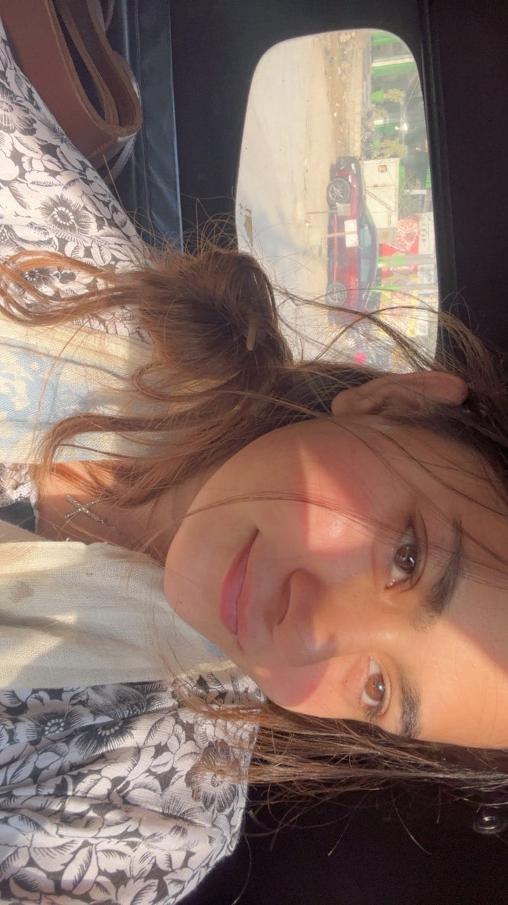
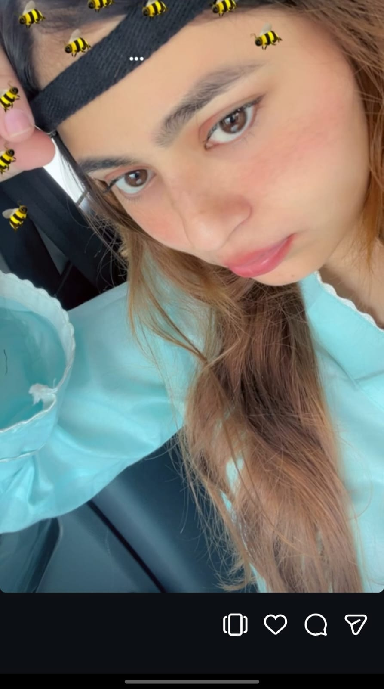
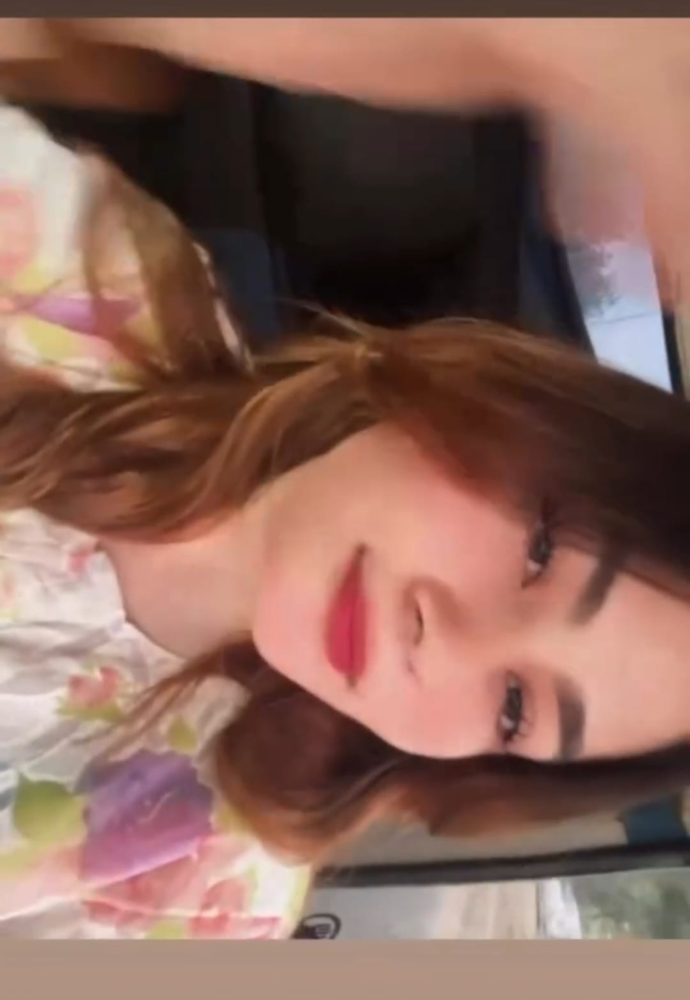
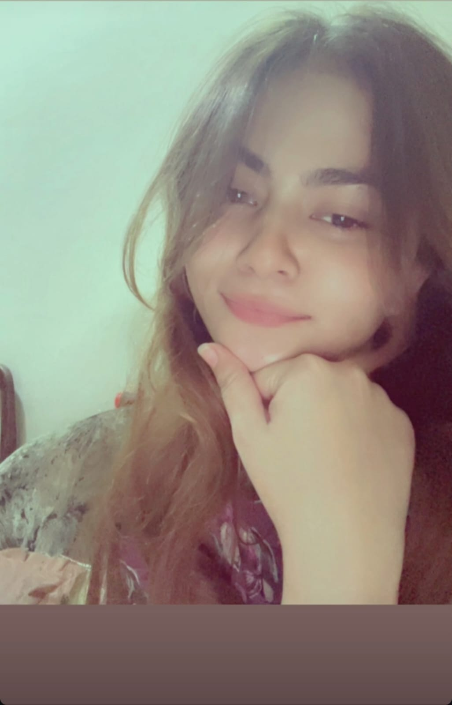

MADE WITH ALL MY LOVE
For my girl,
Umaima.
The world can wait a little.
For now, just let yourself be held by all this love.
ON THE SLOW DAYS
You don’t have
to hurry back.
Rest is not falling behind. Let today be small. Let the blankets be warm, the tea be sweet, and the only thing on your list be getting a little more comfortable.
I’m right here, cheering for every tiny bit of better.
Somewhere in
every favorite.
A few little windows into the moments I want to keep close. My favorite face, in every frame.




Five little reminders of the face I miss most. Every one of them is a favorite.
OPEN WHEN YOU NEED A HUG
A tiny letter,
just for you.
Some words are better read slowly.
ONE LAST THING
Until the sun feels
a little warmer,
Get well soon, my love. I miss you.
I love you, and I’ll be right here.
You are mine, and I am yours — always.
All my love, Samad.
Tap my heart for a little kiss.
MADE FOR UMAIMA, WITH LOVE — ALWAYS